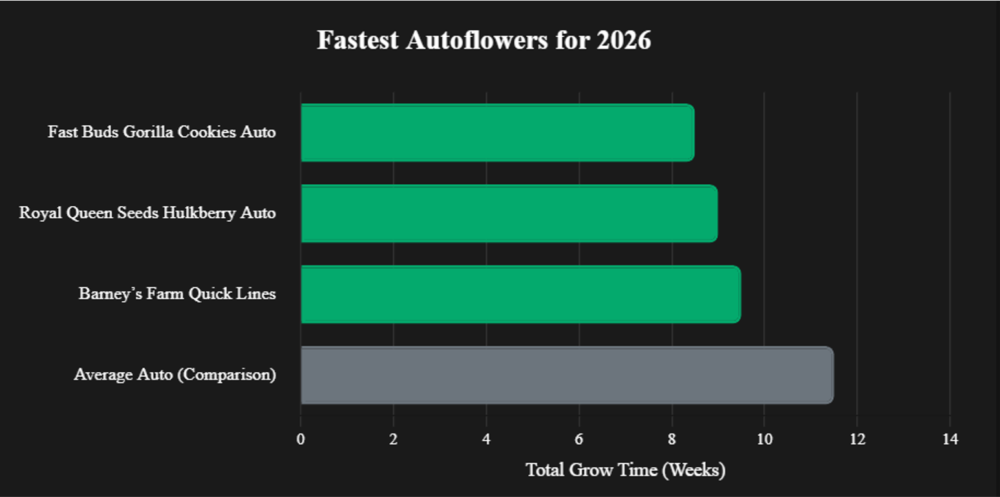
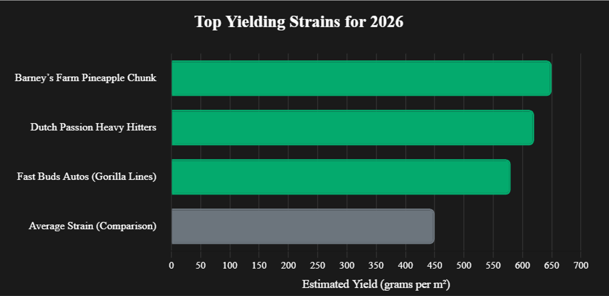
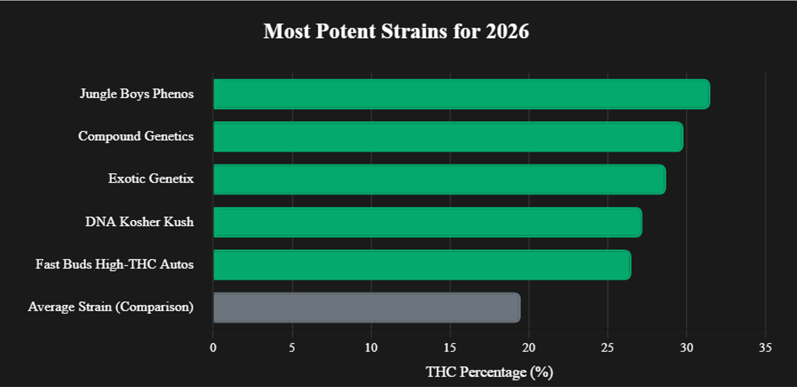

10 Best Cannabis Seeds for 2026: Top Genetics to Grow Loud
Nervous your first grow will crash? Chill—we’ve rounded up 2026’s 10 best cannabis seeds for new growers, from stable classics to THC beasts! Harvest dank buds fast with pro tips on our app—like perfect lighting cycles. See these top picks in action on video or dive in! Share your grow plans with #GrowApp!

Seed packs from 2026’s top breeders—ready to grow loud! #GrowApp
Too stoned to read all this? We got you—watch or listen to the same dank tips instead!
Note: You must be logged in to YouTube to view this video due to age-restricted content.
Why Grow Your Own Cannabis?
Growing your own weed lets you call the shots—pick killer strains, dial in quality, and flex your green thumb. It’s a vibe: half the fun is crafting buds that slap harder than dispensary prices. Home growing’s booming in 2026, with growers swearing by it to chill and save cash. Ready to grow loud with the best breeders of the year?
Why Elite Genetics Are a Game-Changer
Tired of wimpy buds from sketchy bag seeds? Elite breeders deliver stable strains with fatter yields and trichomes sparkling like diamonds.[1] No matter where you grow—USA or worldwide—these genetics level up your harvest. Ready for buds you’ll flex in our top 10 picks?
Note: We may earn commissions from links, but we only back banks we trust.Top 10 Breeders for 2026
These 10 breeders are dropping the best seeds to grow fire buds, the ones growers are raving about in 2026. Snag their genetics, level up your grow game, and watch your tent sing! Check local laws and refund policies—don’t be the dude with a sad grow story.
1. 42 Fast Buds #1 Distribution
The market leader in autoflower distribution, favored for speed and reliability. Why? Massive market availability makes them the most accessible genetics for home growers.
View carriers on 🌐Seed Map
Grow More. Faster.
2. Compound Genetics
Breeding elite, flavor-forward strains featuring exotic terpene profiles, high THC, and striking colors. Why? Famous for developing blockbuster genetics like Apples & Bananas, Jet Fuel Gelato, and Pavé
View carriers on 🌐Seed Map
Flavors By Design
3. DNA Genetics
Globally recognized for their premium, stable genetics. Why? They have won over 200 awards worldwide
View carriers on 🌐Seed Map
Our Terps Don't Lie
4. Sin City Seeds
Heavy resin production, unique terpene profiles, and balanced medicinal effects. Why? They are internationally recognized for creating award-winning genetics
View carriers on 🌐Seed Map
If we don't stand behind our work, why should we expect you to?
5. Green Bodhi
Rising rapidly in popularity across the US landscape.
View carriers on 🌐Seed Map
Intention is the start and the finish
6. Barney’s Farm
Dutch legends with resin-heavy strains. Why? High THC for big effects to flex.
View carriers on 🌐Seed Map
Cultivating Legends, Defining Excellence
7. Exotic Genetix Top Seller
Trendy, colorful genetics for potent buds. Why? Stunning visuals for your grow pics.
View carriers on 🌐Seed Map
It's a Lifestyle
8. Royal Queen
Pioneers of true F1 hybrid seeds and strong educational resources for beginner growers. Why? Massive genetic catalog!
View carriers on 🌐Seed Map
Grow Higher
9. Dutch Passion
Their autoflowers are beginner-friendly. Why? Respected for innovation and potency.
View carriers on 🌐Seed Map
Your Passion, Our Passion
10. Jungle Boys
The undisputed kings of hype genetics with massive retail footprint.
View carriers on 🌐Seed Map
Always Imitated, Never Duplicated
Got a fave breeder? Flex it with your grow crew—tag us with #GrowApp!
Why These Breeders Made the Cut
We hunted down the 10 breeders killing it in 2026 for their stable genetics, fire terps, massive yields, and huge grower love on X, Reddit, and forums. Sales and cup wins don’t lie! From lightning-fast autos to elite photoperiod THC bombs and exotic flavors, these crews deliver buds your tent (and crew) will obsess over. Each owns their lane—more heat drops all year.

Fastest autoflowers for 2026: Fast Buds Gorilla Cookies Auto, Royal Queen Seeds Hulkberry Auto, and Barney’s Farm quick lines finish in 8-10 weeks. Data sourced from breeder specifications and 2026 grower reports.
Join the Grow Crew!
Time to grow loud with 2026’s best breeders—pick your vibe and watch the magic happen! Tag us with #GrowApp and #Cannabis2026 to show off frosty buds that’ll light up your feed. Track your grow with GrowApp—let’s see your wins!
How to Choose Your Breeder
Pick a breeder like you pick your strain—what slaps for your setup?
- Want fast autos? Fast Buds (Gorilla Z Auto, Strawberry Gorilla Auto) or Royal Queen Seeds autos—they finish quick with serious potency.
- Love big yields? Barney’s Farm (Pineapple Chunk, Glookies), Dutch Passion (Sugar Bomb Punch, XXL lines), or Fast Buds money-makers.
- Chasing loud terps & exotics? Compound Genetics (Apples & Bananas, Jet Puft), Exotic Genetix (Cookies & Cream, Grease Monkey), DNA Genetics (Kosher Kush, Strawberry Banana), Green Bodhi hazes, or Jungle Boys fire phenos.

Top yielding strains for 2026: Barney’s Farm Pineapple Chunk, Dutch Passion heavy hitters, and Fast Buds autos maximize your harvest. Data sourced from breeder specifications.
Seeds run $30–$120+ but turn into pounds of fire. Dive into my games for deals and start growing! [2]
Grow Loud in 2026
These genetics will take your grow from good to legendary—no more wimpy buds! Growers are pulling frosty, terpy beasts with these breeders, and your tent will too. Still got questions? I’ve got answers below. Check my genetics guide for more dank tips!

Most potent strains for 2026: Compound Genetics, Exotic Genetix, Jungle Boys phenos (30%+), DNA Kosher Kush, and Fast Buds high-THC autos pack a serious punch. Data sourced from breeder specifications.

2026 fire from the top 10—stable, potent, and grower-approved
FAQs for Growing Loud
Why pick top breeders?
Don’t be that guy growing bag seed! Elite breeders like Fast Buds, Compound Genetics, Barney’s Farm, and Exotic Genetix give 20-30%+ bigger yields and louder terps. [1]
What’s best for USA growers?
All 10 have strong US distribution—fast, discreet shipping from major banks. Fast Buds, Barney’s, Dutch Passion, DNA Genetics, and Jungle Boys genetics are especially easy to get. [3]
Can I grow anywhere?
Global banks ship these worldwide with free seeds on many orders. From Fast Buds & RQS autos to Exotic Genetix and Jungle Boys photoperiods—check local laws first! [3]
What’s the best strain for big yields?
Go for Barney’s Farm Pineapple Chunk / Glookies, Dutch Passion XXL lines, or Fast Buds high-yield autos—your tent will groan under the weight! [2]
References
Grower-vetted sources to level up your grow game, straight from the GrowApp crew!
- The Importance of Cannabis Genetics for Yield and Potency Royal Queen Seeds View Source
- Autoflower vs. Photoperiod: Which Is Best? Seedsman View Source
- How to Choose a Reliable Cannabis Seed Bank ILGM View Source
- Fast Buds, Compound & Exotic Grow Journals 2025-2026 GrowDiaries, Reddit & X View Sources
- Top 10 Breeders Selection 2026 Grower buzz on X and Reddit, compiled by GrowApp